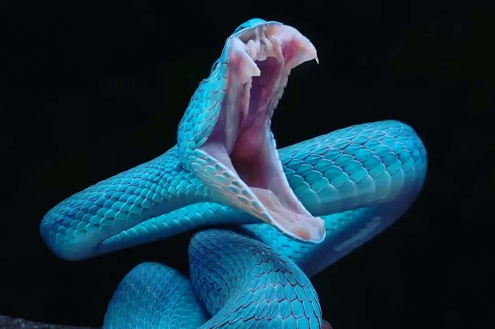

Lovljenje plena
Kače imajo razcepljeni jezik s katerim mahajo gor in dol, nato pa konici potisnejo v parni odprtini Jacobsonovega (oz. vomeronazalnega) organa v ustih, ki zaznava kemične delce v zraku (vonj). Ker je odprtina parna, lahko s tem do neke mere določijo tudi smer dražljaja.
Nekatere kače imajo tudi čutila, občutljiva na infrardeče valovanje, ki se nahajajo med nosnicami in očmi. Omogočajo jim, da »vidijo« toploto, ki jo oddaja njihov plen.
So izključno mesojede živali, ki pogoltnejo cel plen. Prehranjujejo se z majhnimi živalmi, kot so kuščarice, druge kače, mali sesalci, ptiči in njihovimi jajci, ribami, polži ali žuželkami. Večina kač ni strupenih in ubijejo plen tako, da ga pogoltnejo ali zadušijo s stiskanjem. Nekatere nesorodne skupine pa so razvile strup - mešanico različnih toksinov, ki jo izločajo modificirane žleze slinavke. Odpirajo se skozi temu prilagojene zobe - strupnike, ki imajo lahko samo žleb za stekanje ali pri naprednejših vrstah kanal skozi zob.